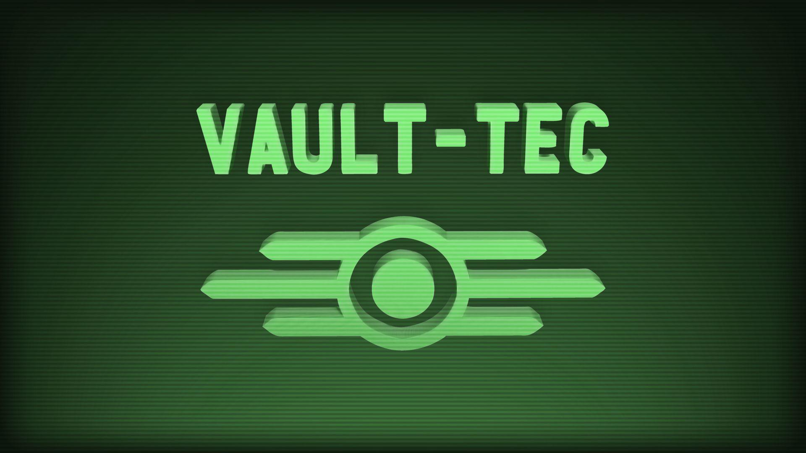

Vault tec's Purpose and Power
Vault-Tec was the smiling corporate face of survival in the Fallout universe, promising safety from nuclear war with its vast network of underground vaults. In truth, most of these shelters were never designed to save humanity at all. Instead, they served as social, psychological, and biological experiments, often cruel and bizarre, orchestrated by Vault-Tec in cooperation with the U.S. government. Only a handful of vaults functioned as genuine havens, while the rest became twisted laboratories that tested everything from forced isolation and mind control to drug addiction and genetic mutation. Their ultimate purpose was to provide data for rebuilding society after the bombs — not as a free society, but one engineered, monitored, and tightly controlled.

Timeline
2031
Vault-Tec Corporation is founded. A defense contractor turned “savior of humanity,” Vault-Tec begins pitching nuclear shelters. Early on, they cozy up to the U.S. government with promises of safety and control.
2050s
Government Contracts & Vault Program Approved. The U.S. government awards Vault-Tec the contract to build 122 massive vaults across the country. The public is told they're to protect citizens from nuclear annihilation. In reality, most are earmarked as experiments.
2065-2070
Vault Construction & “Selection” Begins. Families are pressured into “buying” spots in the vaults. Vault-Tec reps (like the cheery one in Fallout 4) become common sights in neighborhoods. Behind the scenes, scientists design bizarre experiments — from isolation studies to forced drug relapses.
2072
Early Experiments Conducted in Test Facilities. Before the bombs drop, Vault-Tec quietly runs small-scale human trials in labs and secret vault-like structures to fine-tune their nastier experiments.
October 23, 2077
The Great War. Nuclear bombs devastate the world. Vault doors slam shut. In many cases, this is the exact moment Vault-Te's real experiments begin. Some vaults do function as safe havens, but most plunge their residents into psychological, social, or biological chaos.
Post-2077
Data Collection Continues. Automated systems transmit vault experiment results back to surviving branches of the U.S. government (the Enclave). Vault-Tec's work essentially becomes the research backbone for post-war control efforts.
2241
Fallout 2 Events. The Enclave, armed with years of Vault-Tec data, ramps up its efforts to “purify” the human race. The Chosen One's fight against them highlights the true purpose behind the vaults.
2277-2287
Fallout 3 & 4 Events. Multiple vaults are opened, explored, and exposed. From the VR horrors of Vault 112 to the cryo-freeze tragedy of Vault 111, Vault-Tec's legacy is uncovered vault by vault.
2290s+
Fallout: New Vegas & Fallout 76 (retro-prequel). New Vegas shows how vaults get repurposed in post-war society (like House turning Vault 21 into a casino). Fallout 76, set earlier, shows Vault 76 residents as some of the first out in the open — proving Vault-Tec did build a handful of “control” vaults as a baseline for comparison.